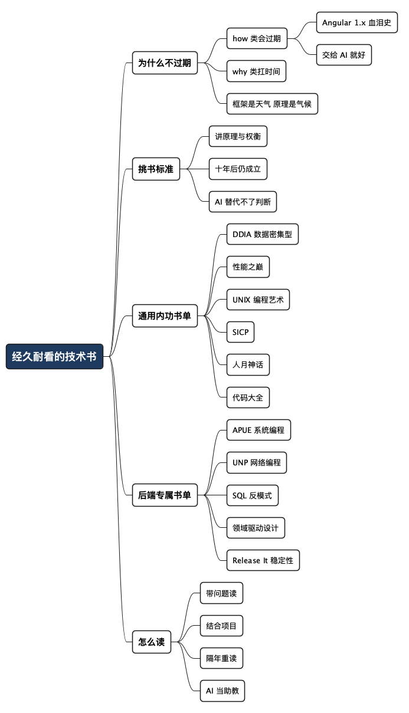

什么样的技术书籍才值得一读再读
Posted on 四 02 7月 2026 in Tech
| Abstract | 什么样的技术书籍才值得一读再读 |
|---|---|
| Authors | Walter Fan |
| Category | Tech |
| Status | v1.0 |
| Updated | 2026-07-02 |
| License | CC-BY-NC-ND 4.0 |
什么样的技术书籍才值得一读再读
前几天收拾书房，从书架最里层扒出一本卷了边的《UNIX 编程艺术》，扉页上是我十几年前写的购书日期。我随手翻了翻，发现里面的话今天读还是不过时——只不过当年我以为自己看懂了，现在才知道那些话到底在说什么。
这些年买过的技术书，说实话大半都过期了。讲某个框架某个版本的、跟着某个热门语言蹭流量的，两三年后再看，基本可以当废纸卖。但总有那么几本，隔几年翻一次，每次都能捞到新东西。 它们不教你 API，教你怎么想问题。
这篇就聊聊我书架上这几本"经久耐看"的书——为什么它们扛得住时间，以及在 AI 一秒能吐出十页文档的今天，为什么还值得你安安静静读完一整本。先说结论：追新是活着，读经典是长本事。
- 我说的"经久耐看"，不是指老，而是指讲原理和判断，不讲一次性的用法。
- 这不是一份"必读清单"打卡任务，而是几本我真读过、真受用的书。没读过的我不敢瞎推荐。
一、为什么框架书会过期，而这几本不会
先讲个我自己踩过的坑。
早些年我特别爱买那种"XX 权威指南"，厚厚一本，讲得巨细无遗。当时觉得赚到了：一本书把某个技术从入门讲到精通。结果呢？那个技术版本一升级，书里三分之一的例子就跑不起来了。等大版本再一换，整本书基本作废。
后来我慢慢想明白一件事：技术书大致分两类。 一类讲"怎么用"（how），一类讲"为什么"（why）。
讲"怎么用"的书，寿命跟它讲的那个工具绑死。工具凉了，书也凉了。这类知识现在最不值钱——你随便问一句 AI，它比书讲得还全，还是最新版。
给你讲个我自己的血泪史。当年 Angular 1.x 正火，我兴冲冲买了一本厚厚的教程，啃得津津有味。结果没过多久 Angular 2.x 出来了——它跟 1.x 完全不兼容，等于推倒重来。再后来 3.x、4.x 一路狂奔，我那本书彻底成了古董。说白了，我学了个寂寞，现在全忘光了。如今前端我也就用纯 JS、TS 和 Vue.js 随手写点东西，那套 Angular 1.x 的知识，一点没留下。
现在有了 AI 和大模型，这类"怎么用"的书我基本不买也不看了。官方文档扫一眼，跟着例子敲两下，就差不多够用；实在卡住了，还有大模型兜底。框架的用法，交给 AI 就好，没必要再往脑子里硬塞。
可讲"为什么"的书不一样。它讲的是那些几十年不怎么变的东西：数据怎么存、系统怎么慢下来的、并发为什么这么难、抽象该在哪里划线。这些道理，从大型机时代到云原生时代，内核没怎么变过。
框架是天气，原理是气候。 你追天气永远追不完，但摸清了气候，出门带不带伞你自己就有数了。
老子讲"知其白，守其黑"，用大白话说就是：热闹的东西要知道，但你得守住那个不热闹、不变的根。技术书也一样，追新的同时，手里得攥着几本讲根的书。
二、我的判断标准：一本书值不值得反复读
在报书单之前，先说清楚我拿什么标准挑书。省得你以为我在跟风推销。
| 维度 | 经久耐看的书 | 会过期的书 |
|---|---|---|
| 讲什么 | 原理、权衡、失败模式 | 某工具某版本的用法 |
| 时效 | 十年后读依然成立 | 版本一升级就作废 |
| 读法 | 隔几年重读有新体会 | 读一遍就可以扔了 |
| AI 替代性 | AI 讲不透那种"判断" | AI 一问就有，还更新 |
关键在最后一行。AI 时代，"能查到的知识"迅速贬值，"需要判断的经验"反而更值钱。 一本好书最大的价值，不是告诉你答案，而是让你在没有标准答案的时候，知道该怎么权衡。
这种"权衡的手感"，AI 目前教不了你，它只会给你一份四平八稳的清单。而下面这几本书，恰恰都在训练这个东西。
三、书架上这几本，我真心推荐
下面这几本，我都读过不止一遍。我尽量说清楚"它到底好在哪"，而不是复述豆瓣简介。
-
《数据密集型应用系统设计》（DDIA，Martin Kleppmann） 如果只能推荐一本，就是它。这本书把"存储、复制、分区、事务、一致性、共识"这些散落各处的概念，用一条清晰的线串了起来。它不吹某个数据库，而是告诉你各种取舍背后的道理——为什么强一致要付出代价，为什么分布式系统里"时间"是个大麻烦。我做后端和平台这些年，遇到架构选型的纠结，回头翻它总能找到抓手。这本书我买了英文版又买中文版，值。
-
《性能之巅》（Systems Performance，Brendan Gregg） 讲系统性能分析的一座高峰。作者是这个领域公认的大牛，书里那套"从现象到根因"的方法论（USE 方法、火焰图那一套），比任何具体工具都耐用。我排查过太多"系统就是慢，但没人说得清哪儿慢"的线上问题，这本书教的不是某个命令，而是一套面对黑盒系统时该怎么系统性地下手的思路。慢的原因年年不同，找原因的方法几十年不变。
-
《UNIX 编程艺术》（The Art of UNIX Programming，Eric Raymond） 这本偏"道"不偏"术"。它讲 UNIX 那套哲学——一个程序只做一件事、组合优于内建、清晰优于聪明。你现在写 Go、写 Python、搭微服务，会发现好的设计品味其实都在这套老哲学里。它不会让你明天就写出更好的代码，但读多了，你对"什么是好设计"会慢慢长出直觉。
-
《计算机程序的构造和解释》（SICP） 这本硬，我承认当年啃得很痛苦。但它彻底改造了我对"抽象"和"程序本质"的理解。它不是教你一门语言，是教你怎么用程序去驾驭复杂度。读完之后你再看各种框架的设计，会有一种"哦，原来都是这几招"的通透感。不适合速成，适合慢慢磨。
-
《人月神话》（The Mythical Man-Month，Brooks） 唯一一本我推荐给所有做技术管理的人的书。1975 年写的，讲的却是今天每个项目还在犯的错——"往拖延的项目里加人只会让它更慢"。技术在变，人性和协作的规律没怎么变。薄薄一本，字字扎心。
-
《代码大全》（Code Complete，Steve McConnell） 讲得最全面的一本"怎么写好代码"——命名、函数、注释、防御式编程、如何驯服复杂度，事无巨细，却一点不空。这本书我有段私人渊源：当年公司办最佳代码竞赛，我拿了名次，奖品就是这本《代码大全》，还是当时的 site manager 亲手送到我手上的。那本书我珍藏了很多年，书页都翻软了。后来我把它转送给了一位同学的儿子——如今那小伙子在科大读软件工程的硕士。一本讲"怎么把代码写好"的书，就这样从一个老程序员手里，传到了下一代人手里。我挺喜欢这个画面的。
我读《性能之巅》时对这一点深有感触。后来设计微服务的度量体系时，我干脆把它那套 USE 方法（Usage、Saturation、Error）扩展成了 USED，多加了一个 Delay（延迟）——即 Usage、Saturation、Error、Delay 四个维度。这套指标在实际排障中屡试不爽，帮我定位过不少疑难杂症。你看，书里学的是方法，真正用的时候，你可以顺着它的思路长出自己的一套。
我故意没列太多。书单越长越像充数。上面这几本，随便挑一本认真读完，都比刷十篇公众号"速览"强。
四、专给后端程序员补几本
上面那几本偏"通用内功"，谁读都有用。但我这些年主要在后端、服务端和平台上摸爬，就再补几本对写服务、扛流量、跟数据库死磕的人特别对味的。
-
《UNIX 环境高级编程》（APUE，Stevens） 后端的底层地基。进程、文件、信号、I/O、并发……你天天在用的那些系统调用，这本书讲得又准又透。作者 Stevens 是公认的大师，文字干净得不像技术书。你可能不会一口气读完，但每次被某个诡异的系统行为卡住，翻它准有答案。它教的不是招式，是让你看懂操作系统这个"运行时"到底在替你干什么。
-
《UNIX 网络编程》（UNP，Stevens） 同一位作者的另一座山。做后端绕不开网络，socket、TCP、多路复用（select/poll/epoll）这些东西，这本书讲得比任何博客都系统。我早年做电话、网络相关的活儿，这本书救过我不止一次。现在框架把网络封装得很深，但真出了问题，还是得懂底下这一层——不然你连日志都看不明白。
-
《SQL 反模式》（SQL Antipatterns，Bill Karwin） 一本被低估的好书。它不教你写 SQL，而是把大家在数据库设计上常犯的那些错——比如乱用外键、拿逗号存列表、滥用 EAV——一个个拎出来解剖。后端程序员天天跟数据库打交道，很多线上事故的根源，其实早在建表那一刻就埋下了。这本书读起来轻松，收益却很实在。
-
《领域驱动设计》（DDD，Eric Evans） 这本争议大，我也知道很多人读不下去。但它提出的一个核心问题值得每个做复杂业务后端的人琢磨：代码里的模型，该怎么跟真实业务对齐？ 你不一定要全盘照搬那套战术模式，但"限界上下文""统一语言"这些概念，会改变你切分服务、划分模块的思路。建议配一本《实现领域驱动设计》一起读，落地感更强。
-
《Release It!》（发布！设计与部署稳定可靠的软件，Michael Nygard） 专治"demo 跑得好好的，一上线就崩"。书里那些稳定性模式——超时、熔断、舱壁、限流——现在都成了微服务的标配，但这本书讲清楚了它们为什么存在，以及不用它们会死得多惨。作者拿真实的线上事故当教材，读的时候后背一阵阵发凉，因为那些坑我都踩过。
举个书里让我印象最深的概念：背压（Back Pressure）。它讲的是生产者/消费者、发布/订阅这类模型里一个绕不开的问题——当消费者跟不上生产者的速度时，你得有办法让上游"慢下来"，而不是任由消息在中间越堆越多。我早年用 ActiveMQ 就吃过这个亏：一个下游服务处理变慢，消息在队列里疯狂积压，内存一路飙到爆，最后整个 broker 被拖垮，连带上游一起雪崩。当时我们只顾着盯生产者，压根没给消费端留任何反压的口子。后来读到《Release It!》讲背压那一章，才恍然大悟——原来这不是只有我们才踩过的坑，而是一类有名字、有成熟对策的经典问题。书的价值就在这儿：它把你踩过的坑，提炼成一个你能记住、能预判、能提前设防的概念。
书里的舱壁模式（Bulkhead Pattern）也同样让我印象深刻。它借的是船舱的比喻——船体被隔成一个个独立的水密舱，一个舱进水，不至于整条船跟着沉。放到后端服务里，就是把资源（线程池、连接池、乃至整个服务实例）按业务隔开，一块出故障，别让它把整个系统一起拖下水。隔离故障、隔离风险，本该是后端服务开发中的一条铁律。 可惜在实际开发里，经常有人因为赶进度把它忽略了：共用一个线程池图省事，结果某个慢接口把线程占满，连带把毫不相干的接口一起拖垮。道理谁都懂，真到 deadline 面前，第一个被砍掉的往往就是这种"看不见收益"的隔离。这也是这类书值得反复读的另一个理由——它一遍遍提醒你那些明知道该做、却总在偷懒的事。
如果你时间有限，我给后端同学排个优先级：先 DDIA 打底，再用 APUE + UNP 补系统和网络的地基，然后靠《Release It!》建立"线上会出事"的敬畏心。 剩下两本随缘。
五、怎么读这类书才不浪费
好书买回来供着不读，是最常见的浪费。分享几条我自己的读法，都很实在。
-
别追求读完，追求读进去 这类书不是小说，没必要从头翻到尾。挑你当下正遇到问题的那一章先读——正在做存储选型就先读 DDIA 的复制和分区，正被性能问题折磨就先读《性能之巅》对应章节。带着问题读，吸收率翻倍。
-
结合手头的活儿读 读到一个概念，立刻想想"我现在这个系统是不是就这样"。书里讲的每个权衡，尽量往自己项目上套一遍。纯看理论记不住，一联系实际就活了。
-
隔一两年重读一次 我不是开玩笑。同一本 DDIA，我刚工作时读、当了架构师之后读、现在再读，划的重点完全不一样。你的经验涨了，书里的话才真正对你打开。好书是面镜子，照出的是你自己成长的刻度。
-
让 AI 当助教，别当替身 现在可以边读边问 AI："这段的例子帮我用 Go 重写一下""这个共识算法给我举个生活中的类比"。AI 是极好的陪读，但它替你读不了——判断力这东西，只能靠你自己的脑子跟原文死磕才能长出来。
一句话：
书是慢的，但慢是它的功能，不是 bug。 那些一读就懂的东西，多半也一忘就没了。
最后一句
框架会过时，语言会更替，连"最佳实践"每隔几年都要被推翻重来。但一个工程师真正的底子——怎么面对复杂、怎么做权衡、怎么在没有答案时下判断——是靠几本讲"为什么"的书，一遍一遍磨出来的。
AI 能帮你查到一切，唯独帮不了你把这些道理"长"进骨头里。所以趁着还有耐心，选一本，从今晚开始读吧。
你书架上那本翻烂了还想再读的，是哪一本？
全文思维导图
@startmindmap
<style>
mindmapDiagram {
node {
BackgroundColor #F8F9FA
RoundCorner 10
Padding 10
FontSize 13
}
:depth(0) {
BackgroundColor #1E3A5F
FontColor white
FontSize 18
FontStyle bold
}
:depth(1) {
FontSize 15
FontStyle bold
}
:depth(2) {
FontSize 13
}
}
</style>
* 经久耐看的技术书
** 为什么不过期
*** how 类会过期
**** Angular 1.x 血泪史
**** 交给 AI 就好
*** why 类扛时间
*** 框架是天气 原理是气候
** 挑书标准
*** 讲原理与权衡
*** 十年后仍成立
*** AI 替代不了判断
** 通用内功书单
*** DDIA 数据密集型
*** 性能之巅
*** UNIX 编程艺术
*** SICP
*** 人月神话
*** 代码大全
** 后端专属书单
*** APUE 系统编程
*** UNP 网络编程
*** SQL 反模式
*** 领域驱动设计
*** Release It 稳定性
** 怎么读
*** 带问题读
*** 结合项目
*** 隔年重读
*** AI 当助教
@endmindmap

本作品采用知识共享署名-非商业性使用-禁止演绎 4.0 国际许可协议进行许可。